Welcome to Exodia OS
Exodia OS is a highly customized Arch-based Linux distribution, crafted for cybersecurity experts and daily users alike. Whether you're performing robust pentests or tackling simple daily tasks, Exodia OS provides a seamless experience. Its aesthetically pleasing interface and powerful tools make it a prime choice for programming, development, operations security, OSINT, and much more.
Proudly developed in Egypt by the Cyb3rTh1eveZ Team. 🇪🇬
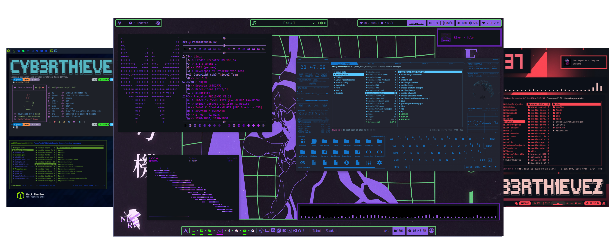
Benefits:
- • Dynamic Environments: Comes with BSPWM and 20+ tailor-made themes.
- • Preinstalled Tools: Essential cybersecurity tools are included.
- • Multiple Editions: Choose from Home, Acer-Predator, and Wireless editions.
- • Versatile Window Managers: Currently supports BSPWM, DWM, and I3WM.
- • Future Updates: More DEs, WMs, and WCs are on the way.
- • Simplified Installation: Easy installation with the Calamares installer.
- • Rolling Release: Always up to date with the latest features.
- • AUR Support: Full support for AUR repositories (with yay).
Key Features:
- • PowerShell: Microsoft PowerShell pre-installed/pre-configured with Oh My Posh.
-
•
TUI Apps: Support a whole bunch of TUI Apps. Run
pacman -Sg Exodia-TUI-Appsto list all available apps. - • Files Templates: Helps you create coding files like web development, Python, and more.
- • EWW: Supports ElKowars wacky widgets (EWW), comes pre-installed and configured.
- • zsh: Exodia comes with zsh pre-installed and pre-configured as the default shell.
-
•
PredatorSense: A kernel module to control RGB & fan speed in Linux for Acer Predator laptops via
Predator-Sense-CLIandPredator-Sense-GUI. - • CyberSecurity Tools: Supports tools for all cybersecurity fields using BlackArch Repos & Exodia Repos.
- • BIOS & UEFI: Supports both BIOS & UEFI.
-
•
Plymouth: Supports
Plymouth, withexodia-plymouthas the default theme.
Showcases:
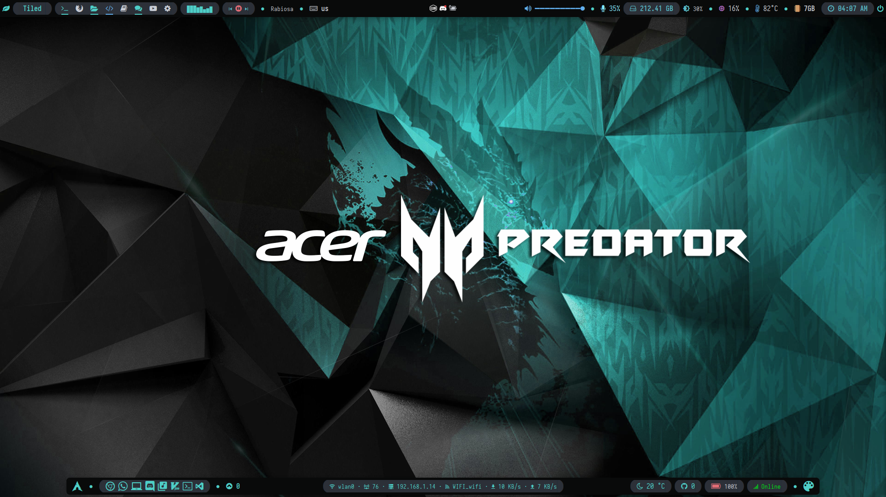
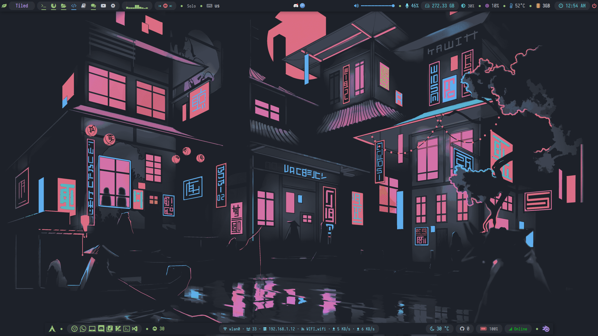
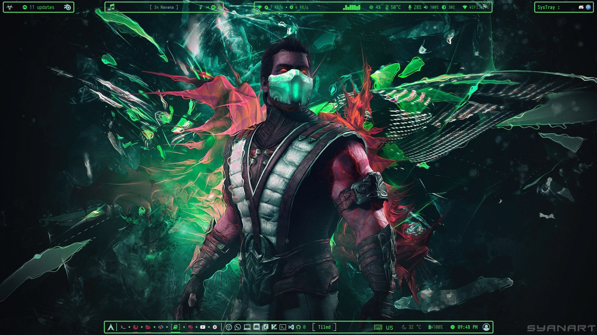

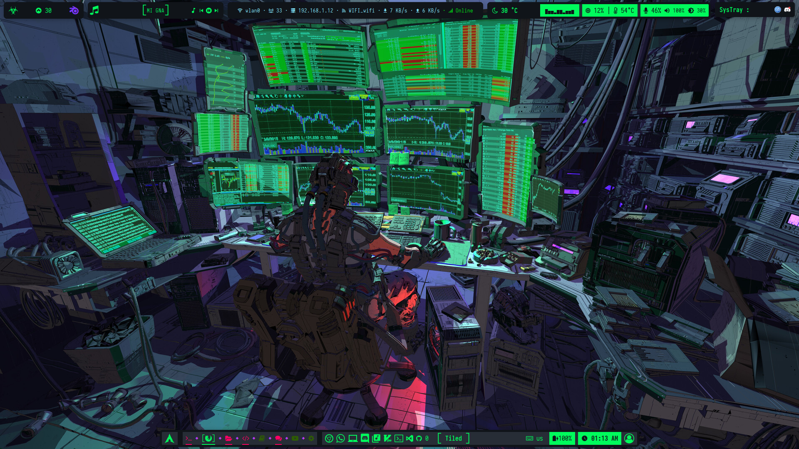
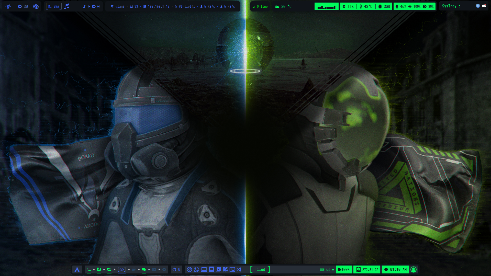
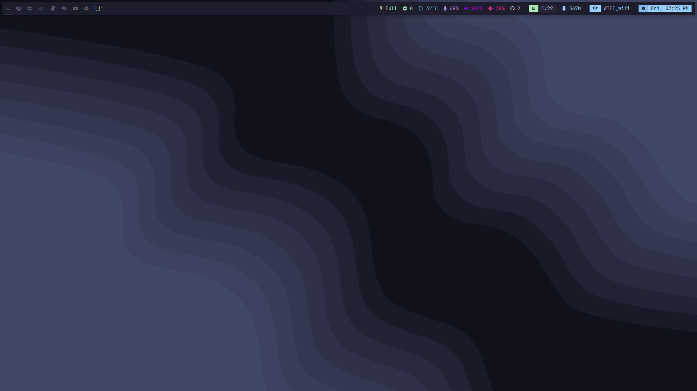
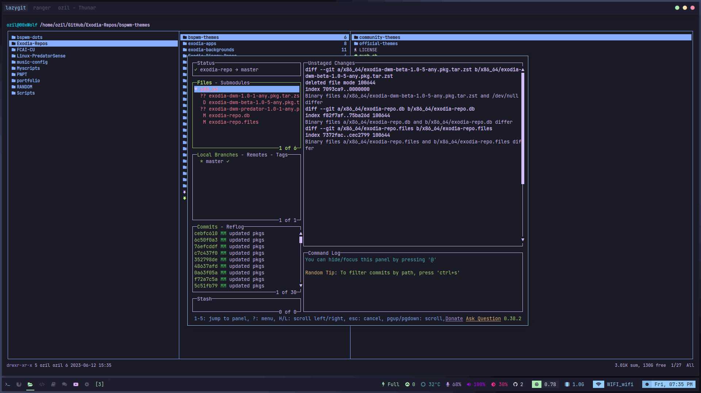
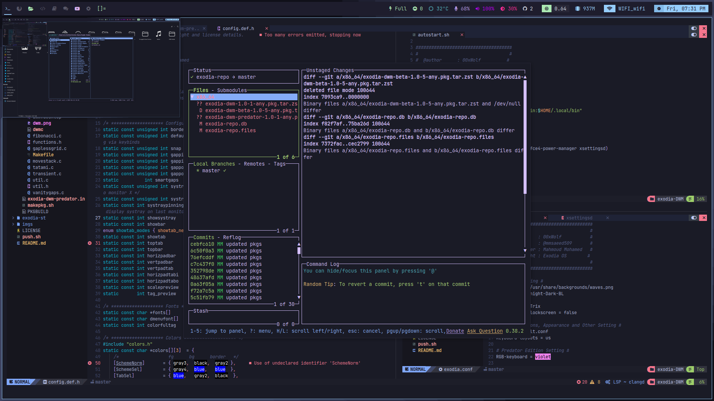
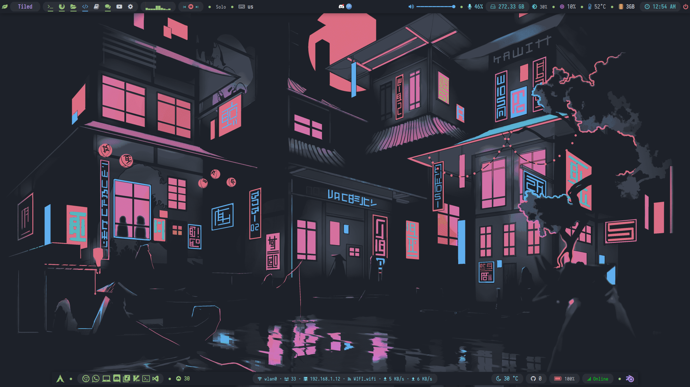
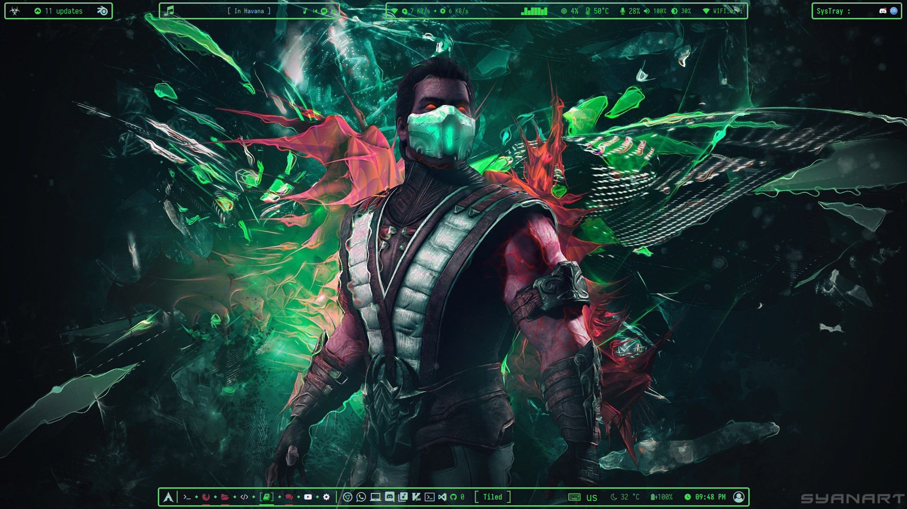
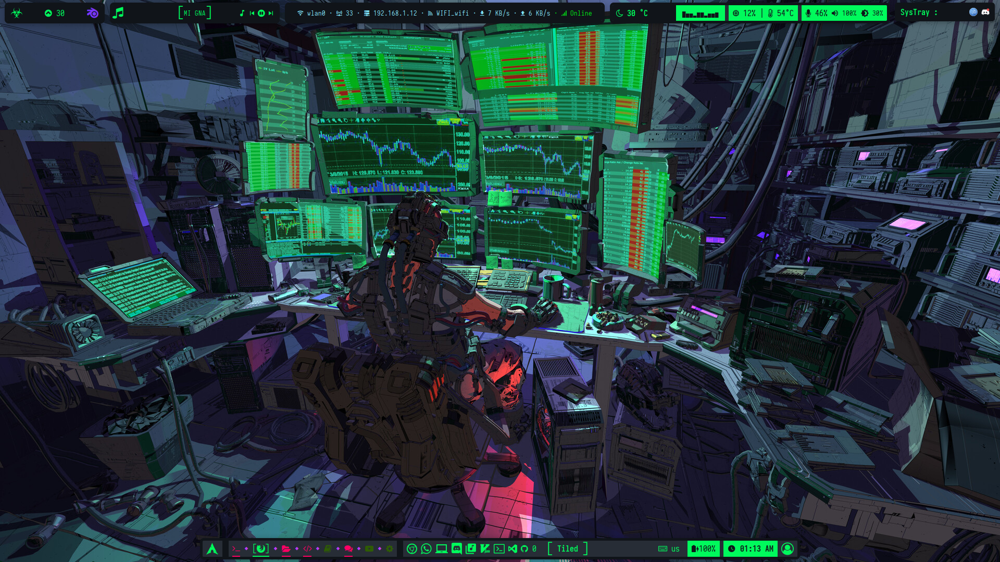
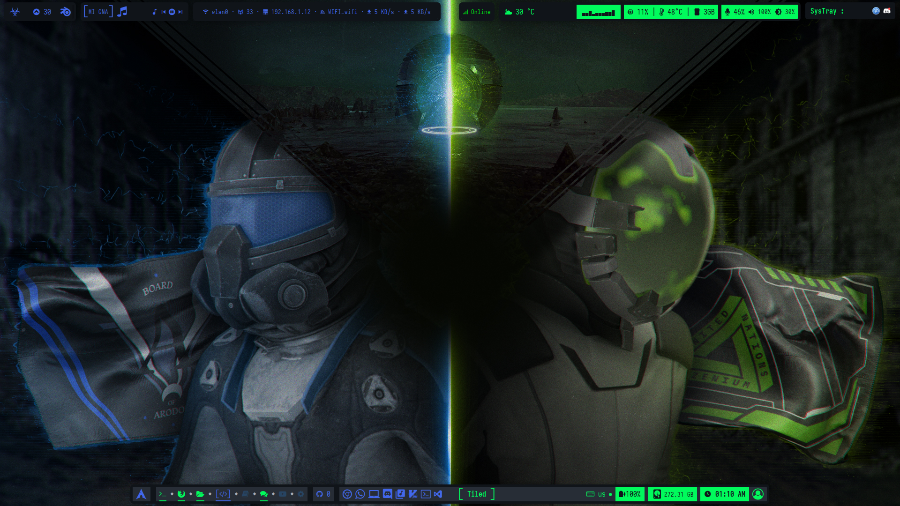
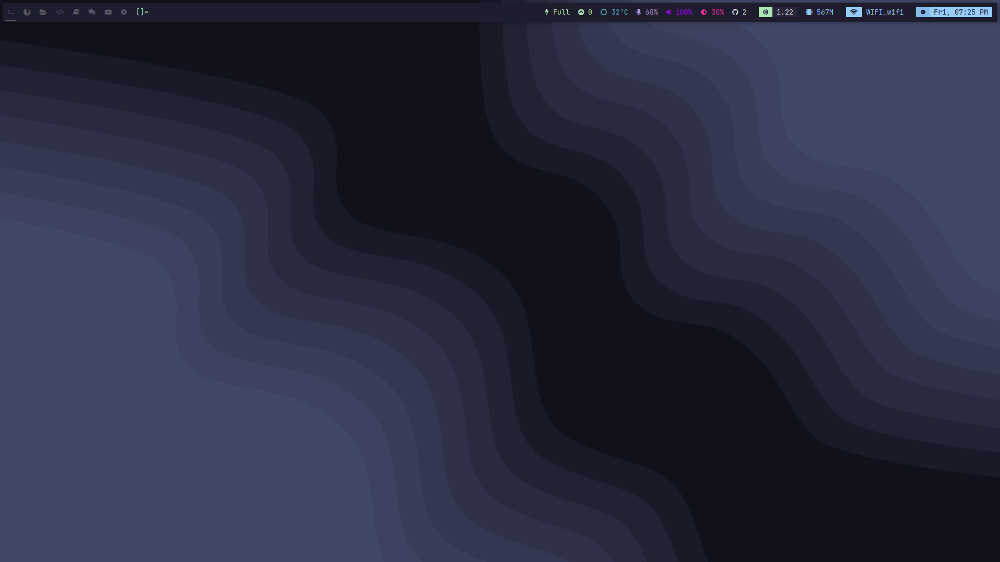
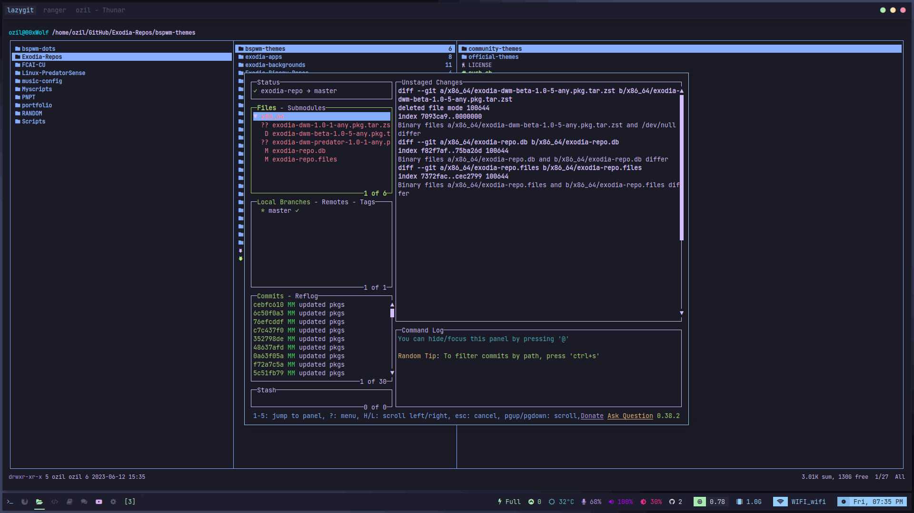
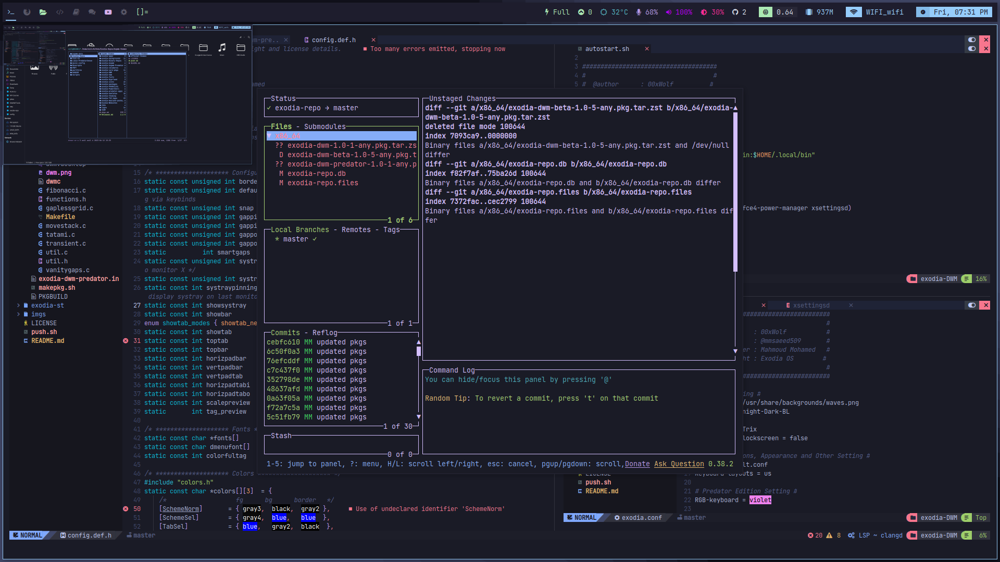